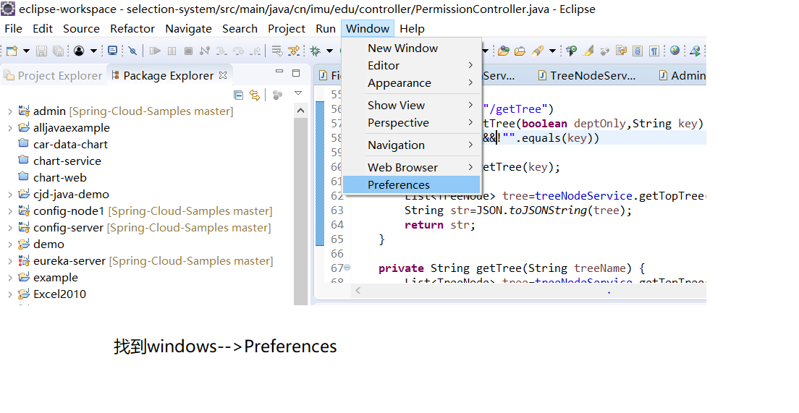
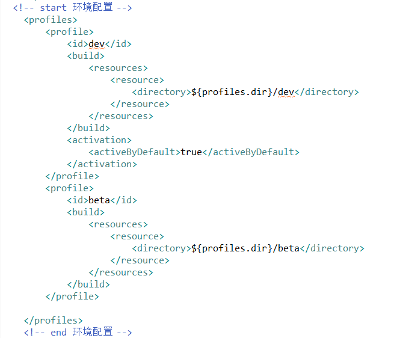

selection-system项目环境
一、基本环境
- 1. Eclipse mars 2 (Recommend)
- 2. mysql 数据库
- 3. Junit 4.12
- 4. Lombok.jar
- 5. tomcat 8.0
- 6. maven
二、 环境设置
三、 具体配置maven
- 1. 下载maven配置文件
- 2. 配置eclipse按照以下步骤操作
- 
- 3. 5. 找到相应位置，将下载的settings.xml替换相应位置的文件，然后。并配置到上图这里。
四、 运行环境配置
- 2. 应用相应环境到项目
- 3. 环境配置信息在pom.xml里边，可以看一下。
- 
- 4．配置文件加载位置在
- 5.文件相应位置
五、 tomcat配置